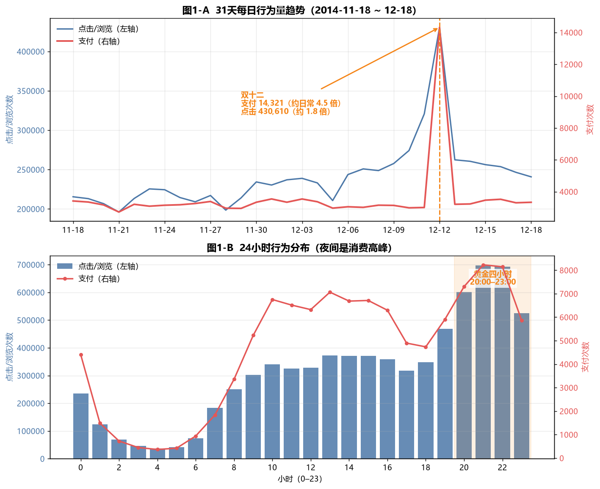
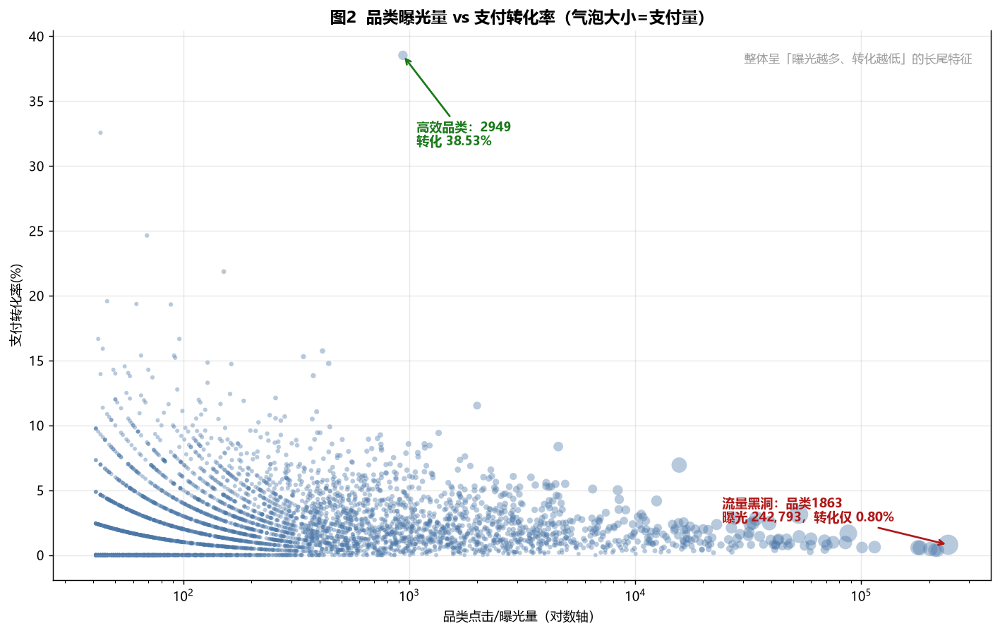
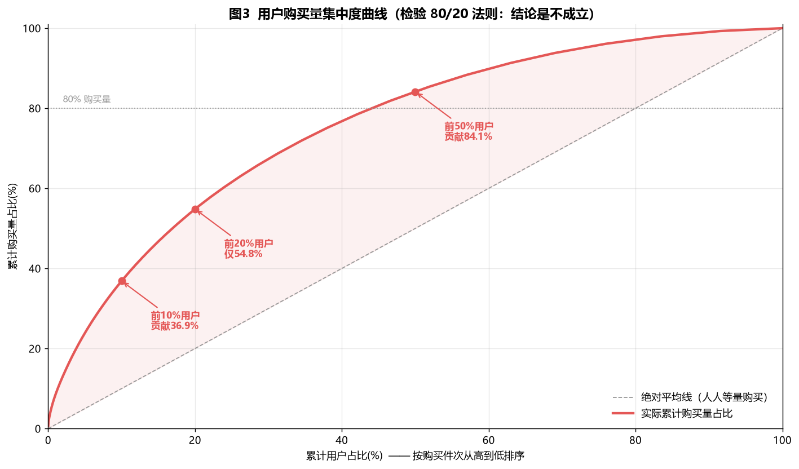
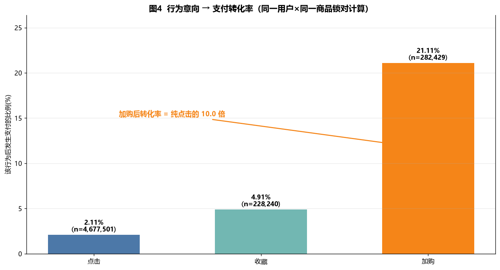
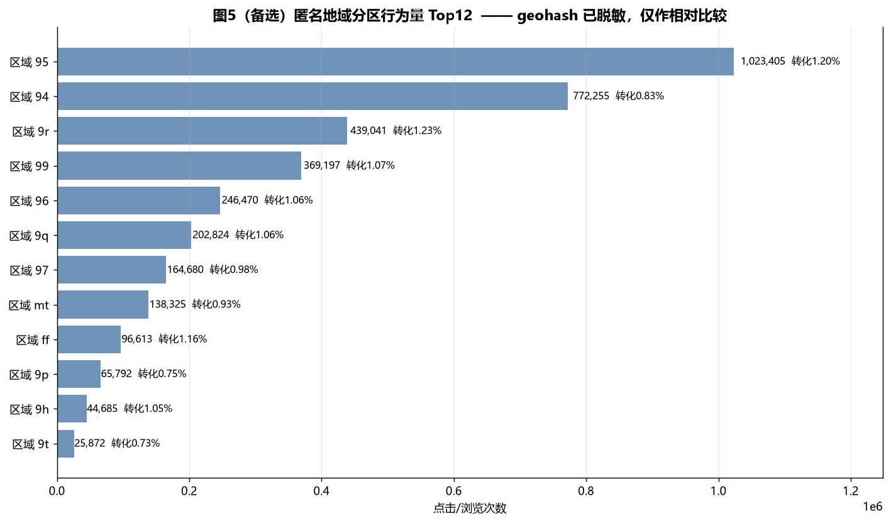
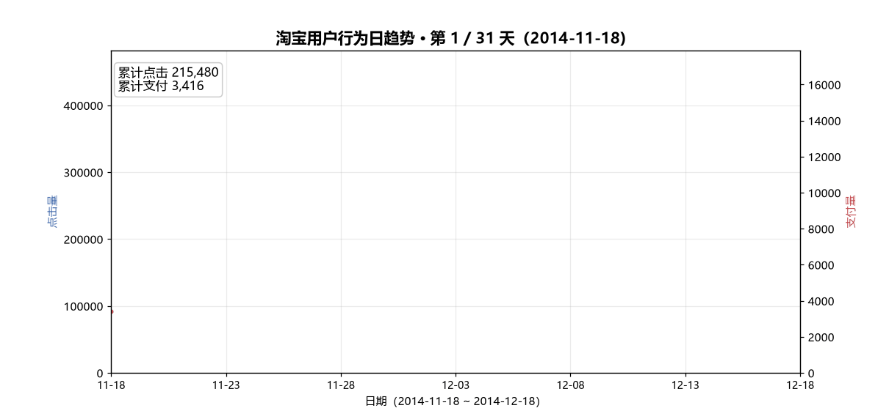

⚡30 秒速览
用一份公开用户行为日志，回答电商运营最关心的 4 个问题，并产出可直接落地的运营建议——不堆图表。
大促放大的是成交
4.46×
双十二支付为日常 4.46 倍，点击仅 1.83 倍；夜间 20–23 点占全天点击 33.6%
品类效率差
10×
黑洞品类 1863 吃 24.3 万曝光只转化 0.80%，高效品类 6717 转化 8.37%
80/20 不成立
54.8%
前 20% 用户仅贡献 54.8% 购买量，中腰部才是最大提升空间
最强召回信号
21.11%
加购后支付率 21.11%，是纯点击的 10 倍——「加购未支付」优先召回
边界（主动声明）：数据集无价格字段 → 属「行为层」分析而非「经营层」（算不了 GMV/客单价）；未做 RFM 分群（见局限性）。
Q四个业务问题
分析始终以「回答业务问题」为终点，而非「跑通代码」。
| 编号 | 业务问题 | 分析落脚点 |
|---|
| Q1 | 用户什么时候购买意愿最强？ | 日趋势（大促）、小时分布、周末对比 |
| Q2 | 什么品类更容易成交、什么在浪费流量？ | 品类曝光量 × 转化率散点 |
| Q3 | 谁是高价值用户？购买是否高度集中？ | 购买量帕累托、购买件数分群 |
| Q4 | 从「看到」到「买下」的转化路径哪一步最强？ | 点击/收藏/加购 → 支付 的意向漏斗 |
📊核心图表与结论
5 张静态图 + 1 张 31 天趋势动图，每张图均附业务解读。
① 消费时间规律（Q1）
双轴时间趋势：柱为点击量、线为支付量，观察大促节点与日内时段。

双十二（12-12）支付 14,321 次 = 日常均值 4.46 倍，但点击仅 1.83 倍 → 大促放大的是成交意愿而非流量；20–23 点贡献全天 33.6% 点击，为投放与客服排班重点窗口。
② 品类效率差异（Q2）
横轴曝光量、纵轴转化率，每个点为某一商品类目。

曝光量与转化率几乎不相关，效率差达 10 倍以上：品类 1863 吃 24.3 万曝光只转化 0.80%，品类 6717 仅 4,566 曝光却转化 8.37% → 预算应从黑洞品类挪向高效品类。
③ 购买集中度（Q3）
按购买量排序的帕累托曲线，检验「80/20」是否成立。

前 10% 用户贡献 36.8%、前 20% 仅 54.8%、前 50% 达 84.1% → 经典「80/20」不成立，中腰部（6–20 件人群，占 46.9%）是提升整体购买量的最大空间。
④ 转化路径效率（Q4）
采用「用户×商品锁对」口径，避免全站口径污染。

加购后支付率 21.11%，是纯点击 2.11% 的 10.02 倍 → 「加购未支付」是最强召回信号，应作为购物车提醒/限时券的第一优先级。
⑤ 地域消费力（备用 · 匿名分区）
因 geohash 已脱敏，不绘制中国地图、不标注城市，仅做匿名分区比较。

行为量最高分区为 95（108.5 万次，支付 12,275）；分区间购买率 0.8%–1.2% 差异有限。仅方法论演示，不支撑业务决策（原始 geohash 缺失约 68%、不可反解真实坐标）。
⑥ 31 天趋势动图
点击与支付随时间演变的 GIF 动画。

✓四条落地结论
| 结论 | 数据依据 | 对应运营动作 |
|---|
| ① 预算跟「夜间 + 大促转化」走 | 双十二支付 4.46×、点击 1.83×；20–23 点点击 33.6% | 大促前集中触达；夜间投放加权重 |
| ② 流量从黑洞品类挪向高效品类 | 1863 转化 0.80% vs 6717 转化 8.37%（差 10×） | 削减黑洞曝光，扩量验证高效品类 |
| ③ 分层运营盯中腰部，不唯头部 | 80/20 不成立，前 20% 仅 54.8%，中腰部占 46.9% | 针对 6–20 件人群做成长型激励 |
| ④ 「加购未支付」最高优先召回 | 加购→支付 21.11%，是纯点击 10.02 倍 | 购物车提醒、限时券优先推加购未支付 |
★项目亮点（面试加分项）
口径严谨
复购、转化漏斗均显式定义口径，并主动验证「80/20 是否成立」，体现批判性思维。
数据素养
识别 geohash 脱敏、重复率与缺失强相关等隐藏质量问题，而非机械套流程。
工程能力
两遍分块扫描在 16GB 内存下精确处理 1225 万行（规避「先 concat 再全局去重」陷阱）。
诚实披露
主动写明无价格字段（行为层而非经营层）、未做 RFM、地域脱敏、抽样窗口短等局限。
⚠局限性（诚实披露）
- 缺少价格字段：无法计算 GMV / 客单价 / ROI，属「行为层分析」而非「经营层分析」。
- 未做标准 RFM 分群：用户分层仅基于购买量集中度，缺 R/F/M 八分群与 cohort 留存。
- 复购口径受限：无订单号，复购只能定义为「同用户同商品/同品类」。
- 地域字段脱敏：geohash 原始约 68% 缺失且不可反解真实坐标，仅做匿名分区比较。
- 时间窗口短且为抽样：仅 31 天、固定 1 万用户，不代表长期或全站真实分布。
- 单一平台、历史数据：2014 年淘宝移动端，与当下直播/内容电商存在代差。
⚙文件结构与复现
完整报告、EDA 统计表、Python 脚本与图表均已随项目开源。
ecommerce-portfolio/
├── README.md 仓库首页 / 作品集入口
├── 05-project-report.md 完整项目报告（含 ER 图、流程图）
├── 06-interview-prep.md 2 分钟口述稿 + 面试题库
├── 02_clean_and_eda.py 清洗 + EDA（两遍分块扫描）
├── 03_visualize.py 静态图脚本
├── data/ 原始 + 清洗后数据（已按 .gitignore 排除）
└── output/
├── eda/ 16 张统计表 + EDA_SUMMARY.txt
└── charts/ 5 张静态图 + 动图 GIF
本地复现：
python 01_load_and_inspect.py # 体检
python 02_clean_and_eda.py # 清洗 + EDA（约 30 秒）
python 03_visualize.py # 可视化
python 03_visualize_anim.py # 动图（可选）
数据源：阿里云天池 dataset 46（阿里移动推荐算法数据集）。本项目使用公开脱敏数据集，全程未编写任何爬虫，不涉及 robots 协议与反爬法律风险，可复现、可审计。